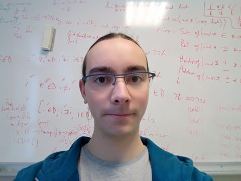

Postdoctoral researcher — solvers that prove their reasoning
Since January 2024 I am a postdoctoral researcher at the University of Glasgow, in the FATA section. I work with Ciaran McCreesh, Matthew McIlree and the VeriPB group on proof producing constraint solvers.
Before that I was a PhD student in symmetric cryptanalysis with declarative languages. I used several kinds of solvers, constraint programming, linear programming and Boolean satisfiability, as well as dedicated algorithms, to find differential characteristics or mount cube attacks, for example. I was working in the CAPSULE team in Rennes, supervised by Stéphanie Delaune, Patrick Derbez and Charles Prud'homme.
Earlier, I obtained a Master's degree in Optimisation and Operational Research in Nantes and Brussels and I did several research internships on multi-objective optimisation, static program analysis and CP explanations.
| Graph theory | Université de Rennes 1, Bachelor 3 | 2020 · 24 h |
| Mixed integer linear programming | Université de Rennes 1, Master 1 | 2020 · 12 h |
| Functional programming | INSA Rennes, Master 1 | 2021 · 18 h |
| Computer science | Université de Rennes 1, Bachelor 1 | 2021–2023 · 72 h |